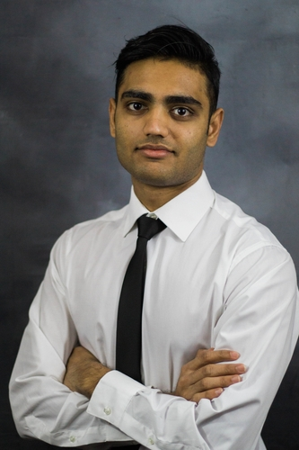

Hello, I'm Tatsat
I am a student at Rutgers University majoring in Electrical and computer engienering and minoring in computer science. I am currently looking for a software developer position in a challenging and growth-oriented organization.
As an undergraduate Engineering Student at Rutgers University, I have balanced both rigorous coursework and multiple extracurricular activities which have helped augment my skills relevant to this position. As an information technology assistant at Rutgers School of Socialwork, I work with a team of six students to assist over five hundred faculties and staff. I have taken classes such as Software Engineering, Cloud Computing, Data structures, computer architecture and systems programming which has helped me develop excellent programming skills. I currently work with three programming languages and in the process of building my own android application. In addition, I have also developed good communication skill by working as a bartender/barback off campus.
My focus, as an aspiring professional, is to utilize my knowledge and professional skills to make a positive impact on the overall organization. I enjoy gathering, organizing and analyzing information, working in groups, and contributing to project strategies.
I would love the opportunity to share more about my qualifications. Please feel free to contact me for more information.